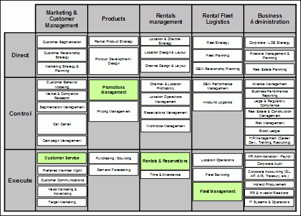
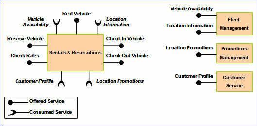
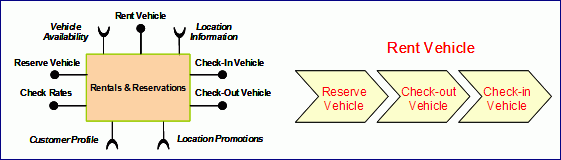

| Example: Rent-a-Car Input Validation |
 |
|
| Related Elements |
|---|
Although SOMA does not require CBM as the source of inputs, the componentized and service oriented view of CBM makes it a natural fit with SOMA. The example will focus on the following key CBM artifacts:
Figure 18 depicts "hot components" identified for the Rent-a-car example. These hot components - Customer Service, Promotions Management, Rentals and Reservations and Fleet Management - denote the focus area of business transformation. Hot components are visually represented by color-coding on the Car Rental segment of the Travel and Transportation industry static CBM map.  Figure 18: Rent-a-car CBM heat map
Table 6: Rent-a-car CBM competency descriptions The primary business component in focus as identified by the CBM engagement is the "Rentals and Reservations" component. It offers a set of business services and consumes a set of business services which are offered by the other collaborating components as shown in figure 19. The collaborating components also become "in focus" for the SOA initiative since they provide services upon which the primary component depends.  Figure 19: Rent-a-car business components and services
Table 7: Rent-a-car CBM component descriptions Figure 20 shows a high level business process model for the Rentals and Reservations CBM business component.  Figure 20: Rent-a-car hot component and level 1 process model The Rent Vehicle process is a long-running interruptible process that uses several short running non-interruptible sub-processes: Reserve Vehicle, Check-out Vehicle, and Check-in Vehicle. The Rent Vehicle process can be initiated in any of several ways, but it always starts with the Reserve Vehicle sub-process. Rent Vehicle could be initiated by individual interactions over the phone, at a kiosk, over the internet or at a rental agency counter. Rent Vehicle could also be initiated in a batch mode if a set of paper reservation forms were collected by a rental agency for deferred use of the Reserve Vehicle sub-process. Finally, the CBM engagement also identified the business goals and associated KPIs for each goal so that the transformation can be measured objectively. These become part of the inputs that are required during the Goal-Service Modeling activity of SOMA. Table 8 shows the goals and associated KPIs for the Rent-a-car scenario:
Table 8: Rent-a-car Goals and KPIs The above inputs set the stage for the SOMA approach to be illustrated in this technique paper. Each SOMA step demonstrates how the outputs from the earlier stage are used by the technique to accomplish the overall goal of creating the service model that best addresses the transformational objectives. |
| © Copyright IBM Corp. 1987, 2012 All Rights Reserved Property of IBM These materials are intended only for use as part of an IBM engagement |